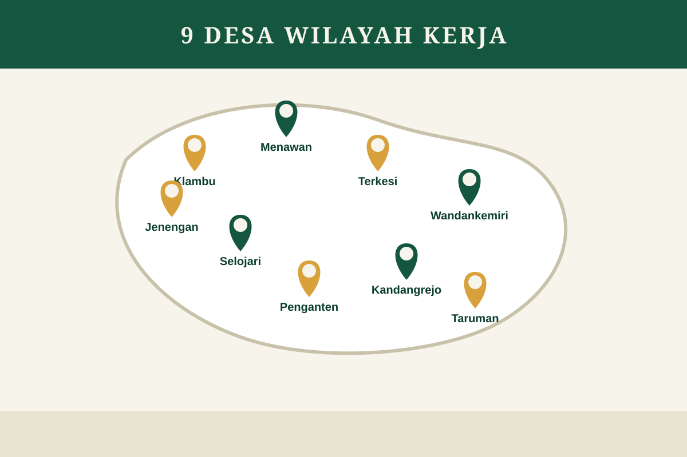

Rapat Koordinasi Awal Tahun Pelajaran 2026/2027
Korwilcam Klambu memimpin rapat koordinasi kepala sekolah SD se-kecamatan membahas persiapan tahun pelajaran baru, verifikasi data awal, dan penjadwalan supervisi semester ganjil.
Baca Selengkapnya →Koordinator Wilayah Kecamatan (Korwilcam) untuk jenjang Sekolah Dasar se-Kecamatan Klambu — mitra terbaik sekolah dalam pembinaan, pendampingan, dan peningkatan mutu pendidikan. Pimpinan: Aniek Septorini, S.Pd., SD.
Korwilcam (Koordinator Wilayah Kecamatan) adalah unit pelayanan Dinas Pendidikan Kabupaten Grobogan di tingkat kecamatan yang membina pendamping satuan pendidikan dan menjadi penghubung resmi antara dinas pendidikan dengan sekolah. Di Kecamatan Klambu, tugas ini dipimpin oleh Aniek Septorini, S.Pd., SD.
Layanan utama mencakup supervisi akademik dan manajerial, penilaian kinerja guru dan kepala sekolah, pemutakhiran data satuan pendidikan (Dapodik), serta pendampingan program prioritas dinas pendidikan — dilaksanakan dengan semangat kolaborasi bersama seluruh kepala sekolah dan guru se-Kecamatan Klambu.
Empat pilar layanan Korwilcam untuk mewujudkan sekolah yang berkualitas di Kecamatan Klambu.
Kunjungan kelas, analisis pembelajaran, dan umpan balik peningkatan kualitas guru melalui instrumen supervisi terstandar.
Detail →Penilaian Kinerja Guru (PKG), Penilaian Kinerja Kepala Sekolah (PKKS), dan pembinaan administrasi keguruan.
Detail →Verifikasi, pemutakhiran, dan advokasi data pokok pendidikan (Dapodik) untuk seluruh satuan pendidikan di kecamatan.
Detail →Media komunikasi dua arah antara Dinas Pendidikan dengan sekolah: sosialisasi kebijakan, koordinasi program, dan konsultasi masalah sekolah.
Detail →Tahun Pelajaran 2026/2027 — semangat kolaborasi untuk mutu.
Pendampingan asesmen nasional berbasis komputer (ANBK), pembiasaan literasi pagi, dan penguatan numerasi dasar di kelas awal dan akhir.
Pendampingan implementasi kurikulum dan pendekatan pembelajaran mendalam (deep learning) sesuai kebijakan Kemendikdasmen.
PKG berkala, pembinaan guru awal PNS, komunitas belajar (KKG), dan pemanfaatan platform PMM untuk pengembangan diri guru.
Wilayah kerja Korwilcam Klambu mencakup sembilan desa dengan luas ±52 km². Setiap desa memiliki satuan pendidikan yang kami dampingi secara berkala.

Korwilcam Klambu memimpin rapat koordinasi kepala sekolah SD se-kecamatan membahas persiapan tahun pelajaran baru, verifikasi data awal, dan penjadwalan supervisi semester ganjil.
Baca Selengkapnya →Pendampingan teknis persiapan ANBK untuk seluruh SD penyelenggara: kesiapan sarana, literasi digital, dan simulasi asesmen di masing-masing sekolah.
Baca Selengkapnya →PKG semester ganjil TA 2026/2027 ditargetkan rampung pada akhir November. Guru disiapkan dengan dokumen kinerja dan portofolio terbaru.
Baca Selengkapnya →Unduh formulir & instrumen pembinaan, atau hubungi kami langsung — kami siap mendampingi sekolah Anda.